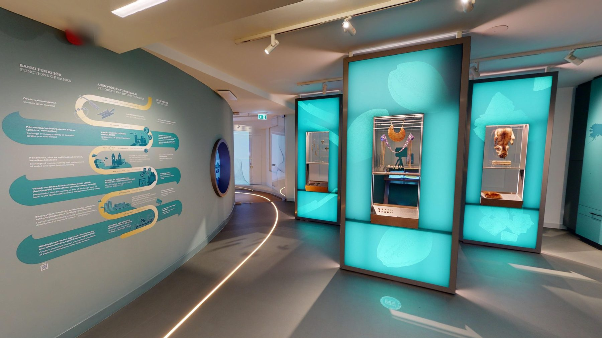
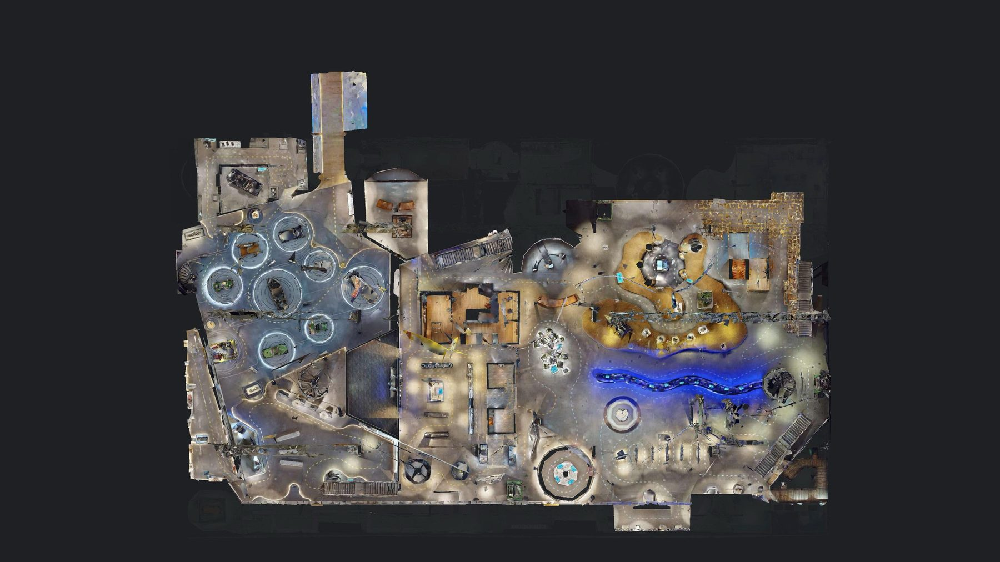
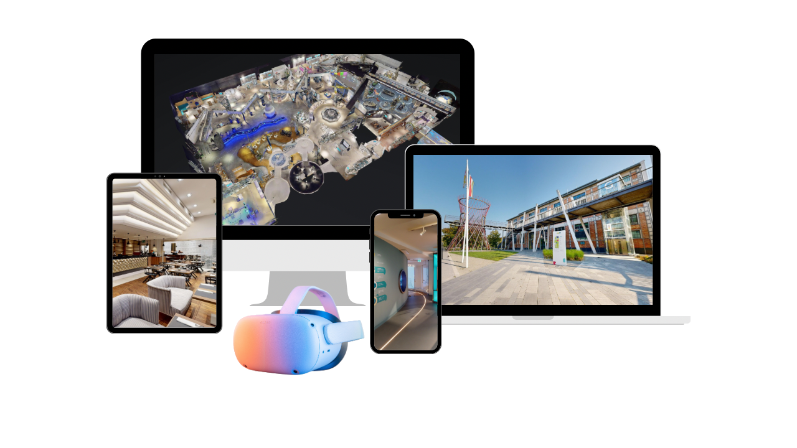
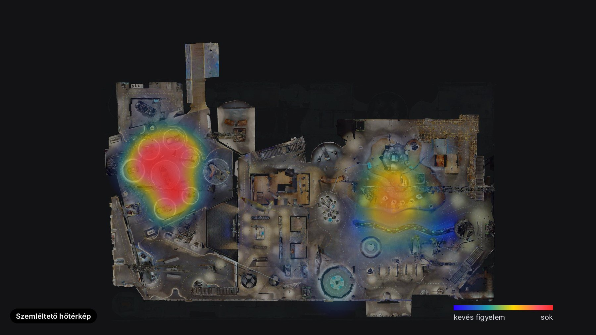
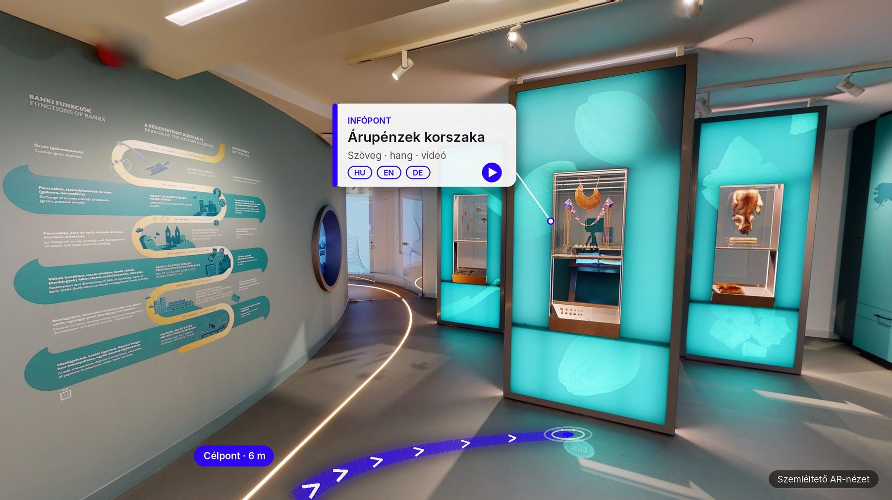

3D exhibition
Always open, online.
Curatorial work preserved, access from anywhere, a space that fits into lessons, tangible reporting.
A lot of work, a short run, a small audience
Months in the making, soon taken down
Afterwards, all that remains of the curatorial and design work is a few photos and a catalogue.
Only those who make it there can see it
A school far away, an interested visitor abroad or a visitor with limited mobility often cannot.
They want results, not impressions
“It was a good exhibition” cannot be measured. A report needs evidence.
One scan, five benefits
A true-to-life, walkable digital twin of the exhibition keeps working for the institution beyond opening hours.
Preservation
The exhibition can still be explored after it closes.
Access
From anywhere, at any time, barrier-free, in several languages.
Education
A space that fits into lessons, for preparation and review.
More visitors
A teaser that invites people to visit in person.
Reporting
Complete documentation and visitor data.
Álmok Álmodói 20, Millenáris
A large, interactive exhibition on the history of Hungarian science and invention. Its digital twin remains open regardless of the exhibition’s run: this is what preservation looks like.
Our work: Álmok Álmodói 20, Millenáris
Money Museum and Visitor Centre
A permanent exhibition with video info points: content appears exactly where the visitor is, so the exhibition makes sense even when explored from home.

Money Museum, BudapestStart the 3D tourOur work: Money Museum and Visitor Centre, Budapest
House of Music Hungary, Sound Dimensions
One scan, many uses: a showcase of the building and the permanent exhibition “Sound Dimensions – Musical Journeys in Space and Time” in one.
Our work: House of Music Hungary
Attila József Memorial, Gát Street
A small space, a big story: a memorial site that fits into a school lesson and can be explored from anywhere.
 Attila József MemorialStart the 3D tour
Attila József MemorialStart the 3D tourOur work: Attila József Memorial
The exhibition closes, the space remains
- The curatorial and design work is preserved in full 3D, not just in photos.
- A digital archive: years later, you can still see exactly what the exhibition looked like.
- Touring: show other institutions what they would be taking on, with a single link.
- For lenders and sponsors: a thank-you, and proof of what their support made possible.
Open to those who cannot come
- Embedded on your website, or shared as a link or QR code.
- Barrier-free access for those who cannot visit in person.
- Multilingual tours for international audiences and tourism partners.
- If the content requires it, access can be limited to a link or a password.
An exhibition you can explore in class
- Before the visitTeachers explore it in advance and plan the lesson, students prepare.
- After the visitStudents can return to the space and work through what they saw.
- Remote lessonsSchools far away, even in other countries, can use it too.
- Guided routes and tasksBy age group or topic, with quizzes and worksheets.
One look, and they want to visit
- A teaser on your website: visitors see in advance what awaits them.
- Press and social media content in a single link.
- Group bookings: schools, companies and travel agencies know in advance what to expect.
The digital tour does not replace the in-person experience: it builds interest in it.
What else it can bring: revenue, sponsors, campaigns
The digital space can earn, too
Paid online tours, even live curator-led tours in the space. Ticket or shop links next to the objects, annual access for schools.
Visible after the exhibition, too
A sponsor’s name or logo can appear in the space, not only during the exhibition’s run. A strong argument for keeping sponsors and winning new ones.
Ready-made content for peak times
Night of Museums, anniversaries, a new opening: the 3D exhibition is ready-to-use communication material, in a single link.
Evidence for your reports
- Complete documentation of the realised exhibition for sponsor and grant reports.
- Visitor data from the digital space: how many viewed it, for how long, and what.
- Explorable material for funder and grant presentations, anniversary retrospectives and planning the next exhibition.
What it looks like in practice
The whole space in one image
How the rooms connect and how the exhibition is structured, at a glance.

Easy orientation
What is where, and where the route leads.
Content next to the object
Text, images, video and audio, right where the visitor is.
Images: Attila József Memorial, Álmok Álmodói 20, Money Museum and Visitor Centre. All our own work.
One link, that simple
- No app, no installation: it opens in the browser on phones, tablets and computers, and in VR headsets too.
- Use it wherever you already are: website, newsletter, social media, press release, letters to teachers.
- A QR code on the poster, at the entrance, in the catalogue.
- The link can even point straight to a specific object or room.

Heatmap: what do people look at?
- The digital exhibition shows where people spend more time and what they click on.
- Data for refining the exhibition and planning the next one.
- Hard numbers for your sponsor reports.
It shows how online visitors behave, not visitors in the galleries.

The visitor’s phone becomes a guide
Visitors choose what they are looking for, and the phone leads them there, with no extra hardware to install.
Text and audio in several languages: fewer labels, more content.
For school groups, with themed stops and tasks.

Two ways to start
Temporary exhibition · Preserve
- Scan right after the opening
- Start view, floors, info points from the curatorial text
- A shareable link and an archive that stays available after closing
Permanent exhibition · Digital gateway
- Scan, info points, themed and educational routes
- Multiple languages as needed
- Ongoing care: content updates and new routes, for example tied to the school year
How we work, and why timing matters
A short call
What you would use it for: preservation, education, communication.
Scanning outside opening hours
No disruption for visitors, we never touch the objects, no flash needed.
Processing and content
The institution provides the text, audio and images, we place them in the space.
Handover and training
Curators, educators, communications: who uses it, and how.
Why in the days after the opening? If the scan is done at the start, the 3D exhibition works for you throughout the entire run: as a teaser, for school preparation, as press material. If it is only made before closing, it becomes just an archive.
Let’s explore together
what it could do for your exhibition
In a 30-minute online call, we walk through an exhibition similar to yours and see whether preservation, education or communication would bring you the most.
Book a 30-minute online demo